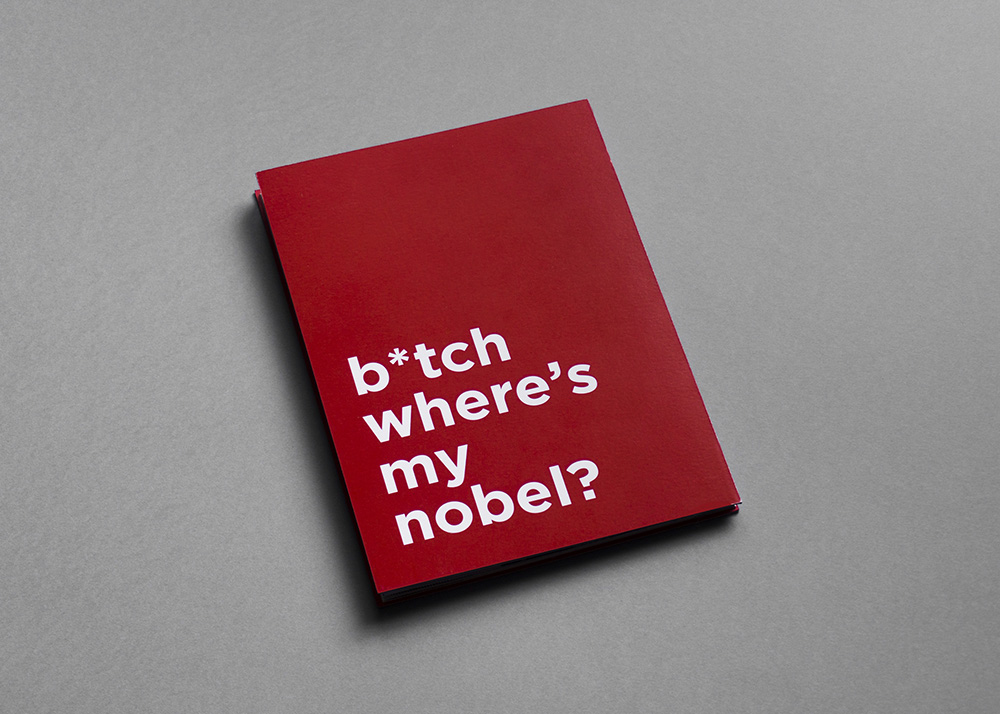
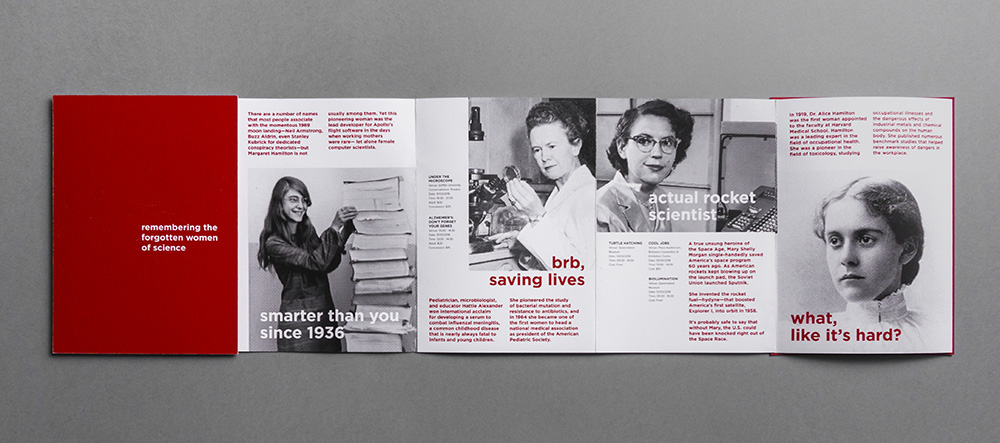

An event programme for a science festival that celebrates women in science and their significant contributions to human knowledge. The playful and irreverent approach highlights the ridiculousness of the injustices they had to endure.


The concertina format (which stretches out even longer than shown here) emphasises the long and unfortunate history of women scientists being overlooked.